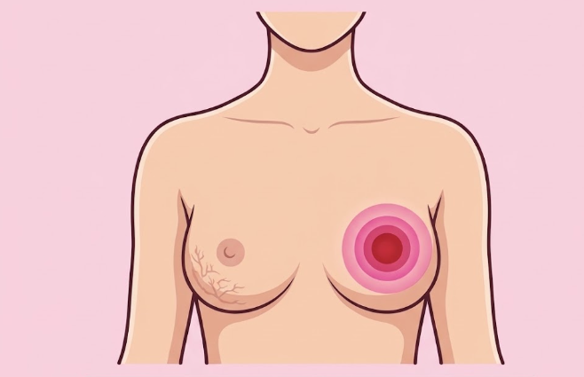

O câncer de mama é o tipo de tumor mais comum entre as mulheres no mundo e no Brasil (depois do câncer de pele não melanoma). Ele ocorre devido ao desenvolvimento anormal e descontrolado de células na região da mama, que formam um tumor. Embora seja muito mais frequente em mulheres, o câncer de mama também pode afetar homens, representando cerca de 1% dos casos.
A boa notícia é que, quando descoberto em estágios iniciais, as chances de cura podem ser maiores. Por isso, a informação e a prevenção são importantes.Não existe uma causa única para o câncer de mama, mas adotar hábitos saudáveis pode ajudar a reduzir os riscos.
Muitas vezes, o câncer de mama não apresenta sintomas em sua fase inicial. Por isso, os exames de rotina são importantes.
Lembre-se: O autoexame não substitui a mamografia e a consulta médica. Se perceber alguma alteração, procure um profissional de saúde.